Токио · Уэно · музей
Национальный музей западного искусства в Уэно: здание Ле Корбюзье, коллекция Мацукаты и «Кувшинки» Моне
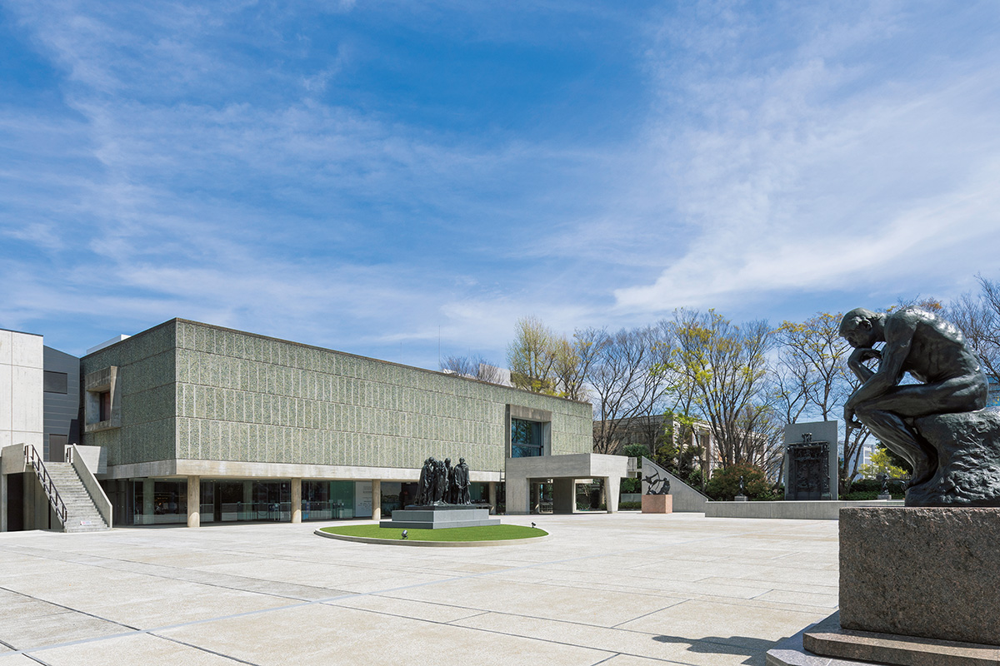
В парке Уэно, в минуте ходьбы от станции, стоит единственное в Японии здание Ле Корбюзье. Внутри него собрано западное искусство от Средневековья до начала XX века, а начиналась коллекция с картин, которые японский промышленник купил в Европе ещё до войны.
История
Коллекция, вернувшаяся из Франции
Национальный музей западного искусства стоит рядом с выходом «Парк» станции Уэно. Это единственный государственный музей Японии, посвящённый западному искусству целиком, от живописи до прикладного искусства. Открылся он в 1959 году.
Ядро собрания называют коллекцией Мацукаты. В первой половине XX века её собрал в Европе Кодзиро Мацуката (1866–1950), глава судостроительной компании «Кавасаки». Он покупал прежде всего французское искусство: картины импрессионистов, скульптуры Родена. Но начались экономический кризис и Вторая мировая война, и около 400 работ, хранившихся во Франции, в конце войны конфисковало французское правительство. После войны Франция передала их Японии, и музей построили именно для того, чтобы хранить и показывать эти вещи. К открытию в собрании было 375 работ Мацукаты.
В 2022 году у музея было около 6000 произведений: живопись, скульптура, рисунки, гравюры, предметы прикладного искусства. В постоянной экспозиции первый этаж главного здания отдан французской скульптуре Нового времени, а со второго этажа и в новом корпусе начинается живопись. Религиозные картины эпохи Возрождения, работы старых мастеров до XVIII века, Моне и Ренуар: по залам можно пройти всю историю западного искусства от конца Средневековья до начала XX века. В выставочном корпусе музей вместе с газетами и другими партнёрами проводит около трёх больших временных выставок в год.
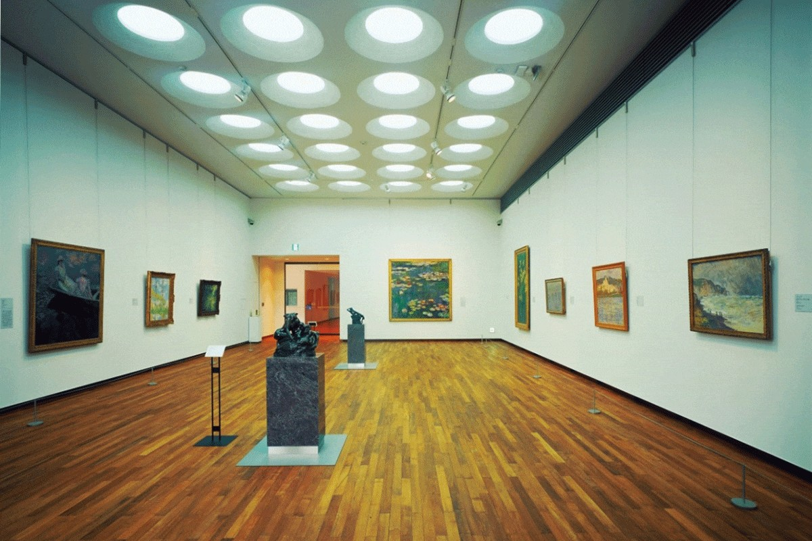
Архитектура
Единственный Ле Корбюзье в Японии
Главное здание спроектировал Ле Корбюзье (1887–1965), архитектор швейцарского происхождения, работавший в основном во Франции. Он искал ясные, рациональные и функциональные принципы проектирования и сильно повлиял на архитектуру и градостроительство XX века. Строить здание в Токио помогали три его японских ученика, позже определившие путь японской архитектуры: Дзюндзо Сакакура (1901–1969), Кунио Маэкава (1905–1986) и Такамаса Ёсидзака (1917–1980). Новый корпус музея спроектировал Кунио Маэкава.
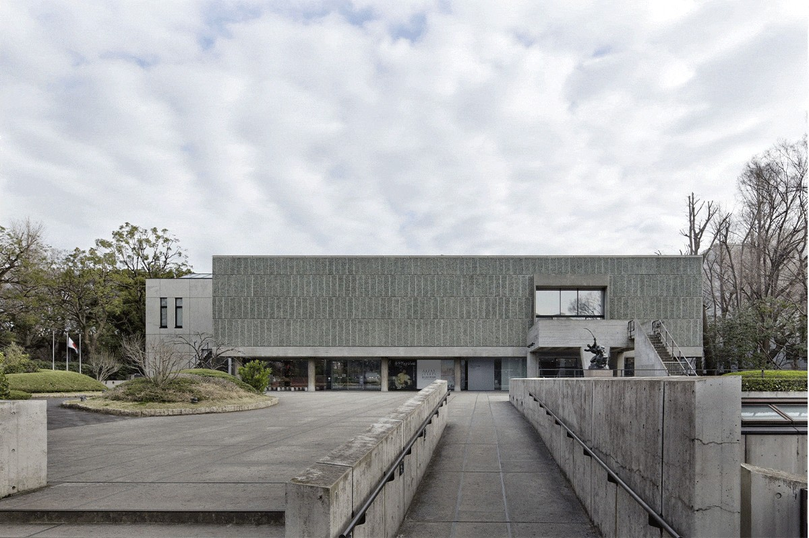
Здание поставлено на колонны, и под ним остаётся открытое пространство, пилоти. Это один из главных приёмов Ле Корбюзье: под домом свободно проходят и люди, и ветер.
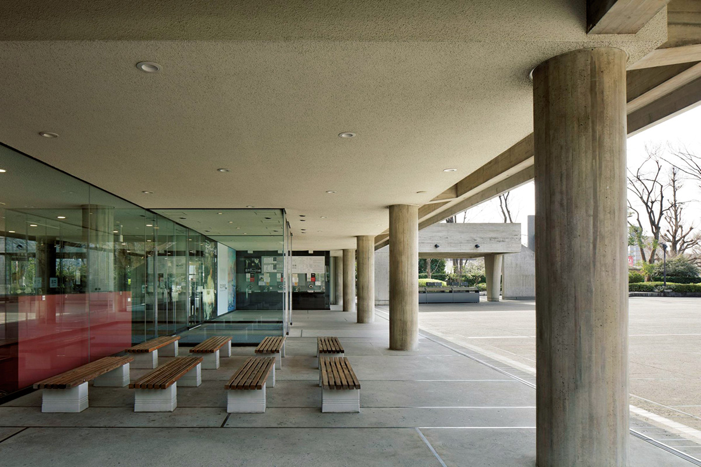
Многие размеры здания подчинены «модулору», системе пропорций, которую Ле Корбюзье вывел из размеров человеческого тела и золотого сечения. По модулору здесь рассчитаны расстояния между колоннами, высота потолков и перил, расчерчены площадь перед музеем и решётка на его стенах.
Музей построен по идее, которую Ле Корбюзье развивал много лет: «музей бесконечного роста». План здания закручен, как раковина улитки, и, когда коллекция растёт, новые залы можно пристраивать снаружи. Кроме Токио такие музеи построены только в двух местах в Индии.
Двор
Каким его задумал архитектор
Музей был закрыт с 2020 года около полутора лет и открылся снова 9 апреля 2022 года. Главной переменой стал двор перед зданием. Поводом послужило включение в список Всемирного наследия: на 40-й сессии комитета в 2016 году отметили, что первоначальный замысел двора частично утрачен. С 1959 года двор не раз переделывали, спасаясь от летней жары и добавляя музею новые функции. Когда пришло время обновлять гидроизоляцию на крыше подземного выставочного зала, двор решили по возможности вернуть к виду, который он имел при открытии.
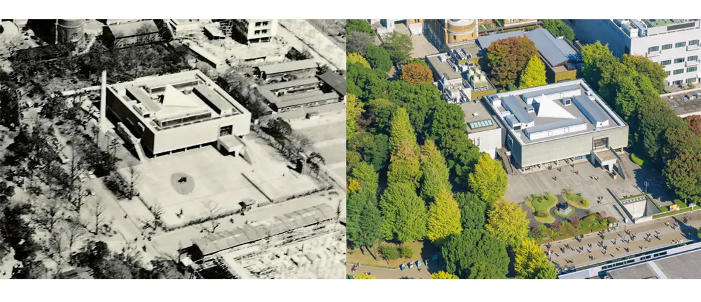
Ограду заменили открытой, и двор снова связан с парком вокруг. На западной стороне, у площади с фонтаном, где при открытии были главные ворота, снова поставили ворота. Восстановили и задуманный маршрут: от «Мыслителя» посетитель идёт к главному зданию мимо других скульптур Родена. Швы на мощении двора, размеченные по модулору, тоже вернули.
Зал XIX века
Сердце здания
В центре главного здания находится большой зал высотой в несколько этажей, «Зал XIX века». Отсюда начинается постоянная экспозиция, здесь стоят несколько скульптур Родена, и именно здесь лучше всего видно, как устроена архитектура Ле Корбюзье. Название залу дал он сам. После открытия в 2022 году зал сделали бесплатным, и там обновили стенды об архитектуре и Всемирном наследии.
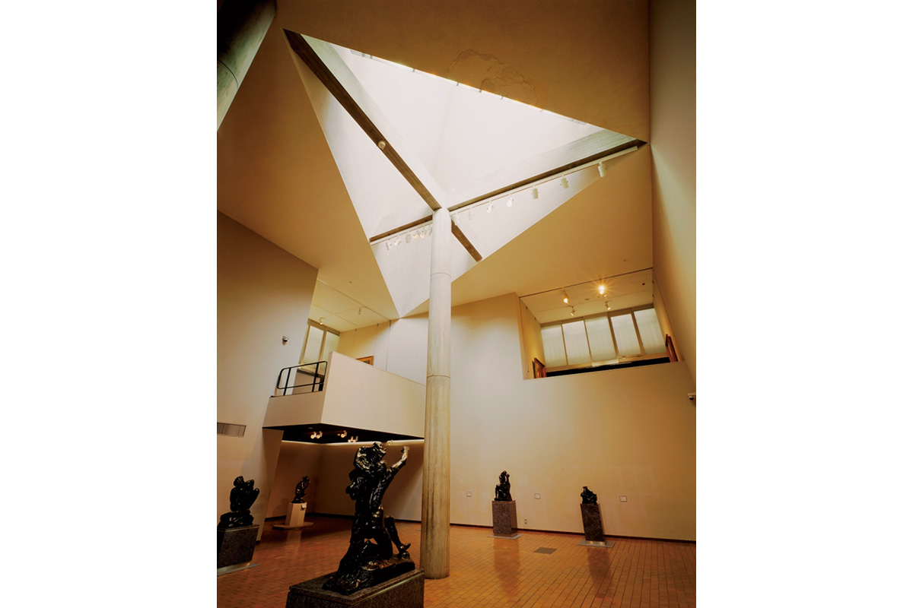
Из зала наверх ведёт пандус. Пока поднимаешься, вид вокруг меняется постепенно, и торопиться здесь не стоит.
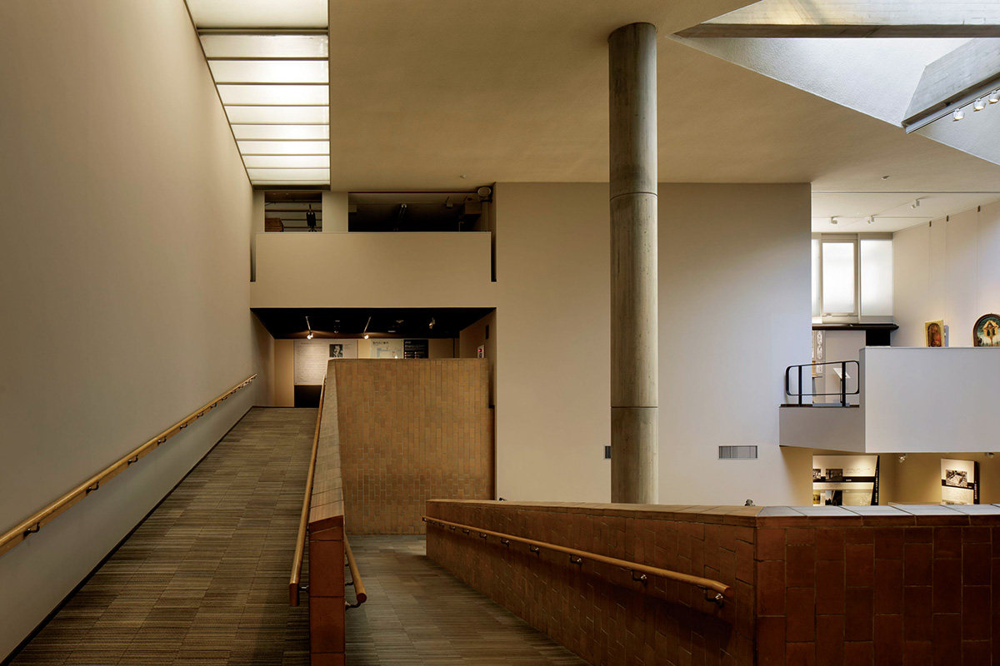
Шедевры
Что посмотреть в собрании
Произведения из собрания выставляют по очереди, и в какой-то момент любое из них может оказаться в запаснике.
Карло Дольчи, «Скорбящая Мадонна»
Дева Мария выступает из тёмного фона в бледном сиянии нимба. Глубокий синий её плаща написан краской из лазурита. Красивое и полное страдания лицо тихо и надолго трогает зрителя. Карло Дольчи (1616–1687) был очень набожен и, по преданию, всю жизнь состоял в братстве святого Бенедикта. Эту картину он написал около 1655 года, в 39 лет. После открытия в 2022 году в музее показывали отдельный стенд о материалах, которыми она написана.
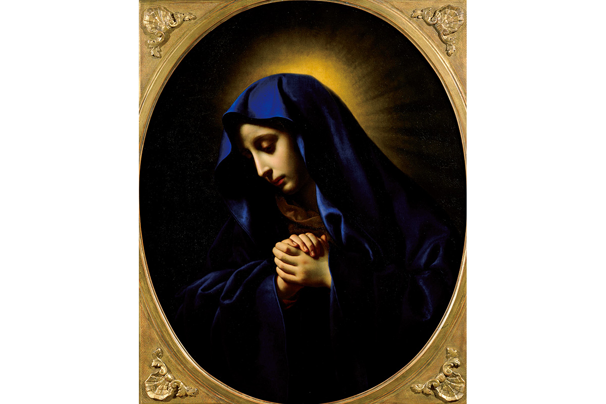
Клод Моне, «Кувшинки»
После 1899 года Клод Моне (1840–1926) почти целиком ушёл в серию «Кувшинки». В поздних работах на холсте часто остаётся одна поверхность пруда, а мазок и цвет уже далеки от ранних импрессионистских приёмов. Эта картина 1916 года считается одной из лучших в поздней серии. Кодзиро Мацуката купил её у самого Моне.
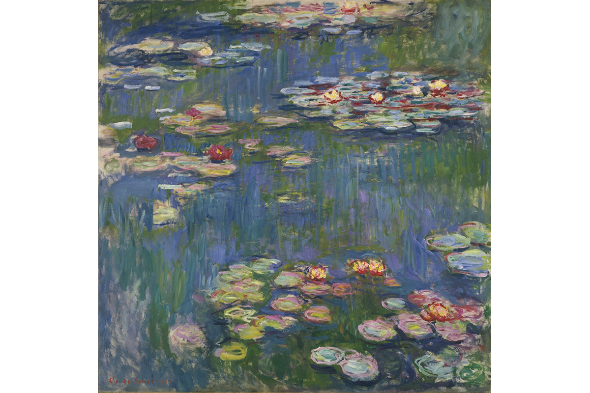
«Сначала „Кувшинки“ в новом корпусе: эту картину Кодзиро Мацуката, создатель нашей коллекции, купил прямо у Моне. Потом „Мыслитель“ Родена»
сотрудник музея
Огюст Роден, «Мыслитель»
Огюст Роден (1840–1917) задумал «Мыслителя» как часть «Врат ада»: фигура сидела в центре над дверями, а потом стала отдельной скульптурой. «Врата ада» стоят тут же, во дворе музея. У музея есть и увеличенный «Мыслитель», и фигура первоначального размера, около 70 см.
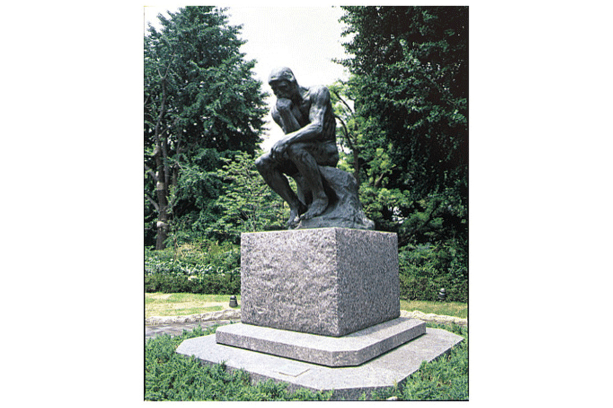
Джон Эверетт Милле, «Волчье логово»
Джон Эверетт Милле (1829–1896) написал четверых своих детей: они играют под роялем, представляя, что это волчье логово. Это так называемая фантазийная картина, сцена из жизни детей. Как и «Утята», вторая картина Милле в музее, она входила в коллекцию Мацукаты.
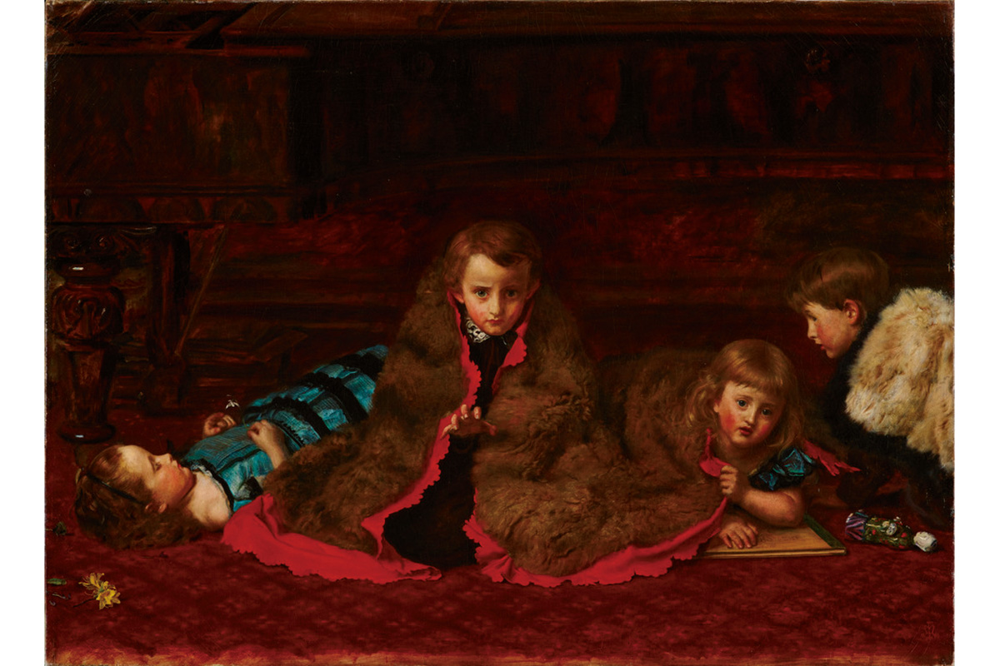
Камилла Клодель, «Персей и Горгона»
Камилла Клодель (1864–1943) занимает важное место в истории французской скульптуры Нового времени. «Персея и Горгону» она сделала в переходный период, когда закончились её долгие отношения с Роденом, учителем и не только. Говорят, что отрубленная голова Горгоны это автопортрет самой Клодель. Музей показал скульптуру среди новых приобретений после открытия в 2022 году.
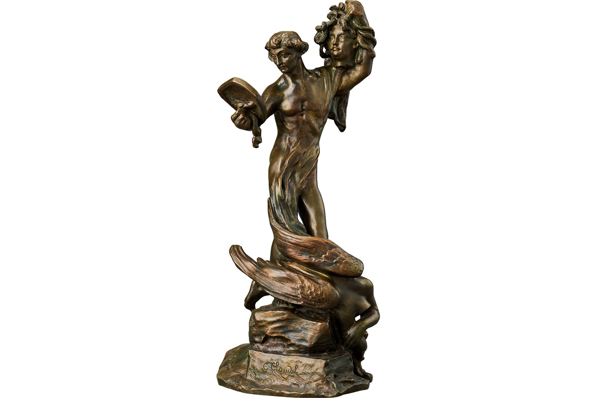
Вход в постоянную экспозицию в 2022 году стоил 500 иен, временные выставки оплачиваются отдельно. По данным сайта музея на 2026 год, с 12 января по 19 марта 2027 года постоянная экспозиция будет закрыта из-за работ в здании (сроки предварительные).
Национальный музей западного искусства
- Адрес
- Токио, район Тайто, Уэно-коэн, 7-7
- Телефон
- +81 50-5541-8600
- Часы работы
- 9:30–17:30, в пятницу и субботу до 20:00, вход за 30 минут до закрытия
- Выходные
- понедельник (если это праздник, то следующий день), бывают внеплановые закрытия
- Цены / Вход
- постоянная экспозиция 500 иен, временные выставки оплачиваются отдельно
- Как добраться
- 1 минута пешком от выхода «Парк» станции Уэно (линия JR Яманотэ и другие)
- Сайт
- nmwa.go.jp
Фото: Национальный музей западного искусства, Токио.